СИСТЕМА ECD (для моделей с DPF) > КОНТАКТЫ ECM |
| Номера контактов (обозначения) | Цвет проводки | Описание контактов | Режим | Заданные условия |
| G57-23 (BATT) - C93-1 (E1) | L - BR | Аккумуляторная батарея (для измерения напряжения аккумуляторной батареи и для памяти ECM) | Всегда | 11-14 В |
| G58-24 (IGSW) - C93-1 (E1) | W - BR | Выключатель зажигания | Зажигание включено (IG) | 11-14 В |
| G57-24 (+B) - C93-1 (E1) | W - BR | Источник питания ECM | Зажигание включено (IG) | 11-14 В |
| G57-17 (+B2) - C93-1 (E1) | W - BR | Источник питания ECM | Зажигание включено (IG) | 11-14 В |
| G58-11 (MREL) - C93-1 (E1) | V - BR | Реле EFI | Зажигание включено (IG) | 11-14 В |
| G58-11 (MREL) - C93-1 (E1) | V - BR | Реле EFI | Через 10 с после выключения зажигания | 0-1,5 В |
| G58-6 (VCPA) - G58-5 (EPA) | LG - P | Источник питания датчика положения педали акселератора (для VPA) | Зажигание включено (IG) | 4,5-5,5 В |
| G58-4 (VCP2) - G58-3 (EPA2) | R - W | Источник питания датчика положения педали акселератора (для VPA2) | Зажигание включено (IG) | 4,5-5,5 В |
| G57-2 (VPA) - G58-5 (EPA) | L - P | Датчик положения педали акселератора (для управления двигателем) | Зажигание включено (IG), педаль акселератора полностью отпущена | 0,5 - 1,1 В |
| G57-2 (VPA) - G58-5 (EPA) | L - P | Датчик положения педали акселератора (для управления двигателем) | Зажигание включено (IG), педаль акселератора полностью нажата | 3,0-4,6 В |
| G57-1 (VPA2) - G58-3 (EPA2) | GR - W | Датчик положения педали акселератора (для обнаружения неисправности датчика) | Зажигание включено (IG), педаль акселератора полностью отпущена | 0,9 - 2,3 В |
| G57-1 (VPA2) - G58-3 (EPA2) | GR - W | Датчик положения педали акселератора (для обнаружения неисправности датчика) | Зажигание включено (IG), педаль акселератора полностью нажата | 3,4 - 5,0 В |
| C90-17 (VG) - C90-18 (EVG) | W - B-W | Датчик массового расхода воздуха | Холостой ход | Формирование импульсов |
| C90-6 (THA) - C90-12 (ETHA) | Y-B - BR | Датчик температуры воздуха на впуске (встроен в датчик массового расхода воздуха) | Холостой ход, температура воздуха на впуске 20°C (68°F) | 0,5 - 3,4 В |
| C90-3 (THIA) - C90-9 (ETHI) | B - BR | Датчик температуры воздуха на впуске | Холостой ход двигателя, температура воздуха на впуске 0-80°C (32-176°F) | 0,5 - 3,4 В |
| C90-5 (THW) - C90-11 (ETHW) | R-L - BR | Датчик температуры охлаждающей жидкости двигателя | Холостой ход, температура охлаждающей жидкости двигателя равна 80°C (176°F) | 0,2 - 1,0 В |
| C90-4 (THF) - C90-10 (ETHF) | G-B - BR | Датчик температуры топлива | Зажигание включено (IG) | 0,5 - 3,4 В |
| G57-6 (STA) - C93-1 (E1) | W - BR | Сигнал стартера | Прокручивание коленчатого вала стартером | 6,0 В или более |
| C90-21 (#1) - C93-1 (E1) C90-22 (#2) - C93-1 (E1) C90-23 (#3) - C93-1 (E1) C90-24 (#4) - C93-1 (E1) | B-W - BR L - BR R-L - BR Y - BR | Форсунка в сборе | Холостой ход | Формирование импульсов (см. осциллограмму 2) |
| C92-13 (G+) - C92-14 (G-) | G - R | Датчик положения распредвала | Холостой ход | Формирование импульсов (см. осциллограмму 5) |
| C92-7 (NE+) - C92-8 (NE-) | W - B | Датчик положения коленчатого вала | Холостой ход | Формирование импульсов (см. осциллограмму 5) |
| G57-8 (STP) - C93-1 (E1) | V - BR | Выключатель стоп-сигналов в сборе | Зажигание включено (IG), педаль тормоза нажата | 7,5-14 В |
| G57-8 (STP) - C93-1 (E1) | V - BR | Выключатель стоп-сигналов в сборе | Зажигание включено (IG), педаль тормоза отпущена | 0-1,5 В |
| G57-9 (ST1-) - C93-1 (E1) | B - BR | Выключатель стоп-сигналов в сборе (напротив контакта STP) | Зажигание включено (IG), педаль тормоза нажата | 0-1,5 В |
| G57-9 (ST1-) - C93-1 (E1) | B - BR | Выключатель стоп-сигналов в сборе (напротив контакта STP) | Зажигание включено (IG), педаль тормоза отпущена | 7,5-14 В |
| C91-15 (CLSW)*1 - C93-1 (E1) | B - BR | Переключатель муфты сцепления в сборе | Выключатель зажигания в состоянии ON (ВКЛ) (IG), педаль сцепления отпущена | 8,5 - 14 В |
| G58-23 (TC) - C93-1 (E1) | V - BR | Контакт TC разъема DLC3 | Зажигание включено (IG) | 11-14 В |
| G57-19 (W) - C93-1 (E1) | V - BR | MIL | Контрольная лампа MIL горит | 0–3 В |
| G57-19 (W) - C93-1 (E1) | V - BR | MIL | MIL не загорелась | 11-14 В |
| G58-30 (SPD) - C93-1 (E1) | R - BR | Сигнал скорости от щитка приборов в сборе | Выключатель зажигания в состоянии ON (ВКЛ) (IG), колесо медленно поворачивается | Формирование импульсов (см. осциллограмму 9) |
| C91-12 (VCPM) - C91-16 (EPIM) | R-B | Источник питания датчика абсолютного давления в коллекторе | Зажигание включено (IG) | 4,5-5,5 В |
| C91-5 (PIM) - C91-16 (EPIM) | L-B - B | Датчик абсолютного давления в коллекторе | Подано отрицательное давление 40 кПа (300 мм рт.ст., 11,8 дюйма рт.ст.) | 0,1-0,7 В |
| C91-5 (PIM) - C91-16 (EPIM) | L-B - B | Датчик абсолютного давления в коллекторе | Соответствует атмосферному давлению | 0,8 - 1,5 В |
| C91-5 (PIM) - C91-16 (EPIM) | L-B - B | Датчик абсолютного давления в коллекторе | Подано положительное давление 170 кПа (1275 мм рт.ст., 50,2 дюйма рт.ст.) | 1,6 - 2,3 В |
| G58-12 (IREL) - C93-1 (E1) | B - BR | Реле EDU | Зажигание выключено | 11-14 В |
| G58-12 (IREL) - C93-1 (E1) | B - BR | Реле EDU | Холостой ход | 0-1,5 В |
| G57-18 (TACH) - C93-1 (E1) | P - BR | Частота вращения коленчатого вала двигателя | Холостой ход | Формирование импульсов |
| C90-14 (VCM) - C90-15 (E2M) | Y-B - GR | Источник питания датчика давления в топливной системе (для PCR1) | Зажигание включено (IG) | 4,5-5,5 В |
| C90-13 (VCS) - C90-8 (E2S) | LG - L | Питание датчика давления топлива (для PCR2) | Зажигание включено (IG) | 4,5-5,5 В |
| C90-16 (PCR1) - C90-15 (E2M) | R - GR | Датчик давления топлива (основная цепь) | Холостой ход | 1,8 - 2,1 В |
| C90-2 (PCR2) - C90-8 (E2S) | Y - L | Датчик давления топлива (вспомогательная цепь) | Холостой ход | 1,2 - 1,5 В |
| C91-23 (ALT) - C93-1 (E1) | L - BR | Импульсный сигнал управления генератором | Холостой ход | Формирование импульсов |
| C91-7 (PEX) - C91-14 (EPEX) | L - G | дифференциальный датчик давления | Зажигание включено (IG) | 0,4 - 4,8 В |
| C92-6 (HAF2) - C93-11 (E05) | W - W-B | Подогреватель датчика состава топливовоздушной смеси | Зажигание включено (IG) | 11-14 В |
| C92-2 (AF2+) - C93-11 (E05) | L - W-B | Датчик состава топливовоздушной смеси | Зажигание включено (IG) | 2,0 - 2,5 В |
| C93-5 (FIV) - C93-1 (E1) | W - BR | Дополнительная форсунка подачи топлива в выпускную трубу | Дополнительная форсунка подачи топлива в выпускную трубу работает | Формирование импульсов |
| C92-23 (PCV+) - C92-12 (PCV-) | W - B | Клапан регулирования всасывания | Холостой ход | Формирование импульсов (см. осциллограмму 1) |
| C90-20 (INJF) - C93-1 (E1) | BR - BR | Электронный блок привода форсунок | Холостой ход | Формирование импульсов (см. осциллограмму 3) |
| C90-19 (PRD) - C93-1 (E1) | B - BR | Сигнал управления клапаном сброса давления | Двигатель прогрет, высокая частота вращения коленчатого вала двигателя | Формирование импульсов (см. осциллограмму 4) |
| C92-4 (RLFF) - C93-1 (E1) | GR - BR | Сигнал подтверждения клапана сброса давления | Двигатель прогрет, высокая частота вращения коленчатого вала двигателя | Формирование импульсов (см. осциллограмму 4) |
| C92-19 (IDLO) - C93-1 (E1) | G - BR | EDU | Холостой ход | 4 - 5,5 В |
| C92-25 (EOPV) - C93-1 (E1) | B-R - BR | Клапан-переключатель давления масла | Холостой ход | 0-1,5 В |
| C93-15 (M+) - C93-1 (E1) | W - BR | Электродвигатель постоянного тока (турбонагнетатель) | Холостой ход | Формирование импульсов (см. осциллограмму 6) |
| C93-14 (M-) - C93-1 (E1) | B - BR | Электродвигатель постоянного тока (турбонагнетатель) | Холостой ход | Формирование импульсов (см. осциллограмму 7) |
| C91-11 (VNVC) - C91-10 (VNE2) | W-L | Питание датчика положения сопловых лопаток | Зажигание включено (IG) | 4,5-5,5 В |
| C91-6 (VNA) - C91-10 (VNE2) | R - L | Датчик положения сопловых лопаток | Зажигание включено (IG) | 2,3 - 2,7 В |
| C91-8 (VCVL) - C91-9 (EVLU) | R - W | Источник питания датчика положения дроссельной заслонки | Зажигание включено (IG) | 4,5-5,5 В |
| C91-3 (VLU) - C91-9 (EVLU) | LG - W | Датчик положения дроссельной заслонки | Выключатель зажигания в состоянии ON (ВКЛ) (IG), дроссельная заслонка полностью открыта | 3,6 - 4,2 В |
| C91-3 (VLU) - C91-9 (EVLU) | LG - W | Датчик положения дроссельной заслонки | Выключатель зажигания в состоянии ON (ВКЛ) (IG), дроссельная заслонка полностью закрыта | 0,4-1,0 В |
| C92-15 (LUSL) - C93-1 (E1) | L-R - BR | Импульсный сигнал дроссельной заслонки дизельного двигателя | Двигатель прогрет, высокая частота вращения коленчатого вала двигателя | Формирование импульсов (см. осциллограмму 8) |
| C91-13 (VCPX) - C91-14 (EPEX) | L - G | Источник питания датчика (номинальное напряжение) | Зажигание включено (IG) | 4,5-5,5 В |
| C90-1 (EGRA) - C90-7 (EEGL) | R-Y - G | Датчик положения клапана РОГ | Зажигание включено (IG) | 0,6-1,4 В |
| C93-6 (EGM+) - C93-8 (ME01) | LG - W-B | Сигнал включения клапана РОГ | Двигатель прогрет и работает на холостом ходу | Формирование импульсов |
| C93-7 (EGM-) - C93-8 (ME01) | V - W-B | Сигнал включения клапана РОГ | Двигатель прогрет и работает на холостом ходу | Формирование импульсов |
| C93-4 (ECBV) - C93-1 (E1) | L-Y - BR | Электровакуумный клапан (для перепускного клапана РОГ № 1) | Электровакуумный клапан в сборе (для перепускного клапана РОГ № 1) включен | 0-1,5 В |
| Электровакуумный клапан в сборе (для перепускного клапана РОГ № 1) выключен | 11-14 В | |||
| G57-22 (ECB2) - C93-1 (E1) | R - BR | Электровакуумный клапан (для перепускного клапана РОГ № 2) | Электровакуумный клапан в сборе (для перепускного клапана РОГ № 2) включен | 0-1,5 В |
| Электровакуумный клапан в сборе (для перепускного клапана РОГ № 2) выключен | 11-14 В | |||
| C91-4 (POP) - C91-14 (EPEX) | P - G | Датчик давления масла в сборе | Двигатель включен | 0,1-0,9 В |
| C92-17 (THCF) - C92-16 (ETCF) | R-W - G-B | Датчик температуры отработавших газов | Двигатель прогрет и работает на холостом ходу | 4,6 - 4,9 В |
| C92-5 (THCI) - C92-11 (ETCI) | G-B - G-R | Датчик температуры отработавших газов № 2 | Двигатель прогрет и работает на холостом ходу | 4,6 - 4,9 В |
| C91-1 (THCO) - C91-2 (ETCO) | B - R | Датчик температуры отработавших газов № 3 | Двигатель прогрет и работает на холостом ходу | 4,6 - 4,9 В |
| C93-2 (SCV) - C93-12 (E01) | B-W - W-B | Электровакуумный клапан (для клапана регулирования всасывания № 1) | Холостой ход | 0-1,5 В |
| Частота вращения коленчатого вала двигателя не ниже 2600 об/мин | 11-14 В | |||
| C93-3 (SCV2) - C93-12 (E01) | L-B - W-B | Электровакуумный клапан (для клапана регулирования всасывания № 2) | Холостой ход | 0-1,5 В |
| Частота вращения коленчатого вала двигателя не ниже 2600 об/мин | 11-14 В | |||
| C92-20 (PSW) - C93-12 (E01) | G - W-B | Датчик давления масла в усилителе рулевого управления | Рулевое колесо повернуто | 0–3 В |
| Рулевое колесо не повернуто | 11-14 В | |||
| G57-10 (ACM) - C93-12 (E01) | B - W-B | Электровакуумный клапан (для опоры двигателя) | Холостой ход | 0-1,5 В |
| G58-10 (AC1) - C93-12 (E01) | LG - W-B | Сигнал системы кондиционирования | Выключатель системы кондиционирования включен | 0-1,5 В |
| Выключатель системы кондиционирования выключен | 11-14 В | |||
| G58-13 (ACT) - C93-12 (E01) | R - W-B | Сигнал системы кондиционирования | Зажигание включено (IG) | 11-14 В |
| Задействована отсечка питания системы кондиционирования | 0–3 В | |||
| C92-26 (NSW)*2 - C93-12 (E01) | B - W-B | Датчик положения паркинга/нейтрали в сборе | Зажигание включено (IG), рычаг переключения передач в положении P или N | Менее 3 В |
| Зажигание включено (IG), рычаг переключения передач не в положении P или N | 11-14 В | |||
| C91-15 (D)*2 - C93-12 (E01) | G - W-B | Датчик положения паркинга/нейтрали в сборе | Зажигание включено (IG), рычаг переключения передач в положении D | 11-14 В |
| Зажигание включено (IG), рычаг переключения передач не в положении D | Менее 1 В | |||
| G57-15 (FAN) - C93-12 (E01) | GR - W-B | Реле FAN | Зажигание включено (IG) | 11-14 В |
| Холостой ход при включенной системе кондиционирования или высокой температуре охлаждающей жидкости двигателя | Менее 1,5 В | |||
| G58-36 (CANL) - C93-1 (E1) | W - BR | Линия передачи данных CAN | Зажигание включено (IG) | Формирование импульсов (см. осциллограмму 10) |
| G58-35 (CANH) - C93-1 (E1) | LG - BR | Линия передачи данных CAN | Зажигание включено (IG) | Формирование импульсов (см. осциллограмму 11) |
| G57-21 (CANN) - C93-1 (E1) | GR - BR | Линия передачи данных CAN | Зажигание включено (IG) | Формирование импульсов (см. осциллограмму 10) |
| G57-20 (CANP) - C93-1 (E1) | BR - BR | Линия передачи данных CAN | Зажигание включено (IG) | Формирование импульсов (см. осциллограмму 11) |
| C92-18 (CAN-)*2 - C93-1 (E1) | W - BR | Линия передачи данных CAN | Зажигание включено (IG) | Формирование импульсов (см. осциллограмму 10) |
| C92-24 (CAN+)*2 - C93-1 (E1) | B - BR | Линия передачи данных CAN | Зажигание включено (IG) | Формирование импульсов (см. осциллограмму 11) |
| ОСЦИЛЛОГРАММА 1 |
| 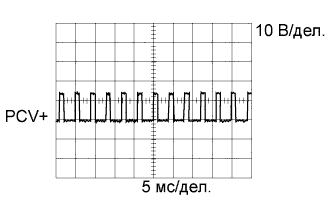 |
| Позиция | Описание |
| Номера контактов (обозначения) | C92-23 (PCV+) - C92-12 (PCV-) |
| Настройки прибора | 10 В/дел., 5 мс/дел. |
| Режим | Двигатель прогрет, холостой ход или прокручивание коленчатого вала двигателя стартером |
| ОСЦИЛЛОГРАММА 2 |
| 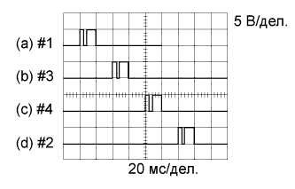 |
| Позиция | Описание |
| Номера контактов (обозначения) | (a) C90-21 (#1) - C93-1 (E1) (b) C90-22 (#2) - C93-1 (E1) (c) C90-23 (#3) - C93-1 (E1) (d) C90-24 (#4) - C93-1 (E1) |
| Настройки прибора | 5 В/дел., 20 мс/дел. |
| Режим | Холостые обороты при прогретом двигателе |
| ОСЦИЛЛОГРАММА 3 |
| 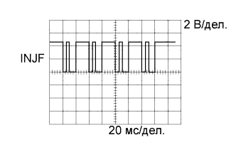 |
| Позиция | Описание |
| Номера контактов (обозначения) | C90-20 (INJF) - C93-1 (E1) |
| Настройки прибора | 2 В/дел., 20 мс/дел. |
| Режим | Холостые обороты при прогретом двигателе |
| ОСЦИЛЛОГРАММА 4 |
| 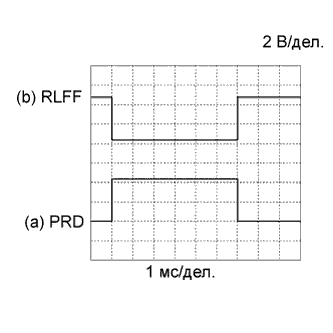 |
| Позиция | Описание |
| Номера контактов (обозначения) | (a) C90-19 (PRD) - C93-1 (E1) (b) C92-4 (RLFF) - C93-1 (E1) |
| Настройки прибора | 2 В/дел., 1 мс/дел. |
| Условие | Двигатель прогрет, высокая частота вращения коленчатого вала двигателя |
| ОСЦИЛЛОГРАММА 5 |
| 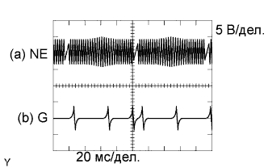 |
| Позиция | Описание |
| Номера контактов (обозначения) | (a) C92-7 (NE+) - C92-8 (NE-) (b) C92-13 (G+) - C92-14 (G-) |
| Настройки прибора | 5 В/дел., 20 мс/дел. |
| Режим | Холостые обороты при прогретом двигателе |
| ОСЦИЛЛОГРАММА 6 |
| 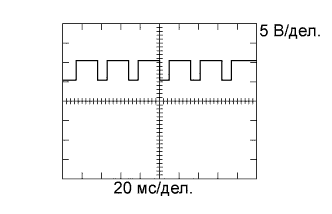 |
| Позиция | Описание |
| Номера контактов (обозначения) | C93-15 (M+) - C93-1 (E1) |
| Настройки прибора | 5 В/дел., 20 мс/дел. |
| Режим | Холостые обороты при прогретом двигателе |
| ОСЦИЛЛОГРАММА 7 |
| 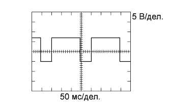 |
| Позиция | Описание |
| Номера контактов (обозначения) | C93-14 (M-) - C93-1 (E1) |
| Настройки прибора | 5 В/дел., 50 мс/дел. |
| Условие | Холостые обороты при прогретом двигателе |
| ОСЦИЛЛОГРАММА 8 |
| 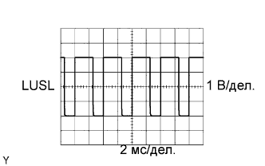 |
| Позиция | Описание |
| Номера контактов (обозначения) | C92-15 (LUSL) - C93-1 (E1) |
| Настройки прибора | 1 В/дел., 2 мс/дел. |
| Режим | Увеличение частоты вращения коленчатого вала двигателя при прогретом двигателе |
| ОСЦИЛЛОГРАММА 9 |
| 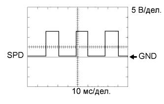 |
| Позиция | Описание |
| Номера контактов (обозначения) | G58-30 (SPD) - C93-1 (E1) |
| Настройки прибора | 5 В/дел., 10 мс/дел. |
| Режим | Движение со скоростью 40 км/час (25 миль в час) |
| ОСЦИЛЛОГРАММА 10 |
| 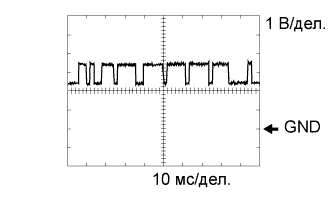 |
| Позиция | Описание |
| Номера контактов (обозначения) | G58-36 (CANL) - C93-1 (E1) G57-21 (CANN) - C93-1 (E1) C92-18 (CAN-) - C93-1 (E1) |
| Настройки прибора | 1 В/дел., 10 мс/дел. |
| Режим | Двигатель остановлен, зажигание включено (IG) |
| ОСЦИЛЛОГРАММА 11 |
| 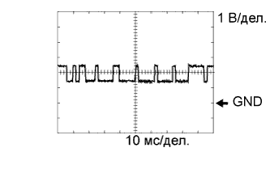 |
| Позиция | Описание |
| Номера контактов (обозначения) | G58-35 (CANH) - C93-1 (E1) G57-20 (CANP) - C93-1 (E1) C92-24 (CAN+) - C93-1 (E1) |
| Настройки прибора | 1 В/дел., 10 мс/дел. |
| Режим | Двигатель остановлен, зажигание включено (IG) |